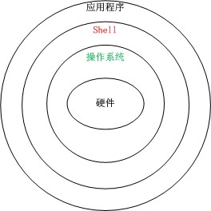
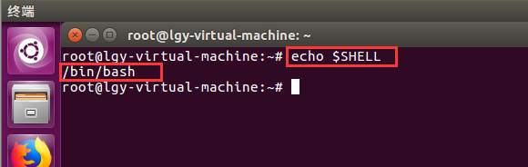
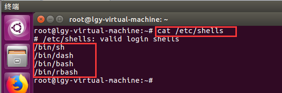

Shell介绍
目标
1. 了解什么是shell
2. 体验shell编写与执行
1. Shell快速入门
1.1 什么是shell
1. 在计算机科学中，shell(壳)是操作系统的壳，操作系统相对于shell来说为核
2. shell是用户与操作系统之间的接口程序
3. shell是一个命令解释器-shell自己有内置的命令集，shell脚本编程就是操作这些命令

1.2 shell执行原理
首先检查是否为内部命令，否的话则在指定的搜索路径中检查是否为可执行的应用程序，否
的话提示:未找到命令或不是内部或外部命令
1.3 为什么学习shell
Linux系统中有很多命令，shell脚本可以一个命令或者多个命令集合，通过执行shell脚本可以完成指定的需求功能；
1.4 shell分类
1. 图形界面shell
2. 命令行shell
图形界面shell【了解】
说明：
通过图形界面操作数据或应用程序，也就是我们常用的桌面系统
如：
windows桌面系统
命令行shell【重点】
通过命令形式操作数据或引用程序；
如：
windows -->cmd.exe
linux -->bash/..【本阶段学习】
提示：
1. 我们通过常说的shell脚本编程就是指linux系统中的shell编程
2. linux中的shell有很多种，如：sh/csh/ksh/..等，我们这里只学习现阶段shell编程最常用的bash shell
如何查看Linux系统默认的shell类型和支持的shell类型？

1. 查看默认shell类型
打开命令行执行：echo $SHELL
1). echo:显示输出指定内容
2). $SHELL:SHELL为变量名称，$为变量标识符
注意：$SHELL：为大写

2. 查看支持的shell类型
打开命令行执行：cat /etc/shells
1). cat:查看文件内容命令
2). /etc/shells:文件路径及文件名
1.5 shell的使用方式
1. 通过命令行直接输入
2. 通过编辑脚本
通过命令行直接输入
说明：通过命令行模式输入命令并执行
如：
1). echo hello
2). echo 123
提示：通过命令行模式为单行执行，无法一次多行脚本执行
通过编辑脚本
说明：通过vi或vim来编辑脚本文件(.sh)(如果文件不存在则先创建空脚本文件在编辑文件)
提示：
1). vi：编辑器
2). vim:vi的升级版，完全兼容vi，添加新的特性，更适合编辑代码脚本，vi则多用于编辑文本【推荐 vim】
3). 通过文件的方式执行，可以一次执行多行命令
练习1
需求：新建test01.sh脚本通过脚本的方式分别执行以下指令
1). echo hello
2). echo shell
操作步骤分析
1. 打开/新建脚本文件 --> vim test01.sh
2. 打开插入模式 字母a、i、o
3. 指定脚本编译器 --> #!/bin/bash
4. 执行语句 --> echo hello
5. 执行语句 --> echo shell
6. 保存脚本 --> ESC退出插入模式-->:wq
(:wq-->冒号为进入命令；w:为保存脚本；q：为退出脚本；)
7. 执行脚本 bash test01.sh
练习1 总结
1. #!/bin/bash为:指定编译脚本的编译器
2. bash test01.sh为：执行脚本语句
总结
1. 查看默认shell
2. 查看支持的shell
3. cat命令